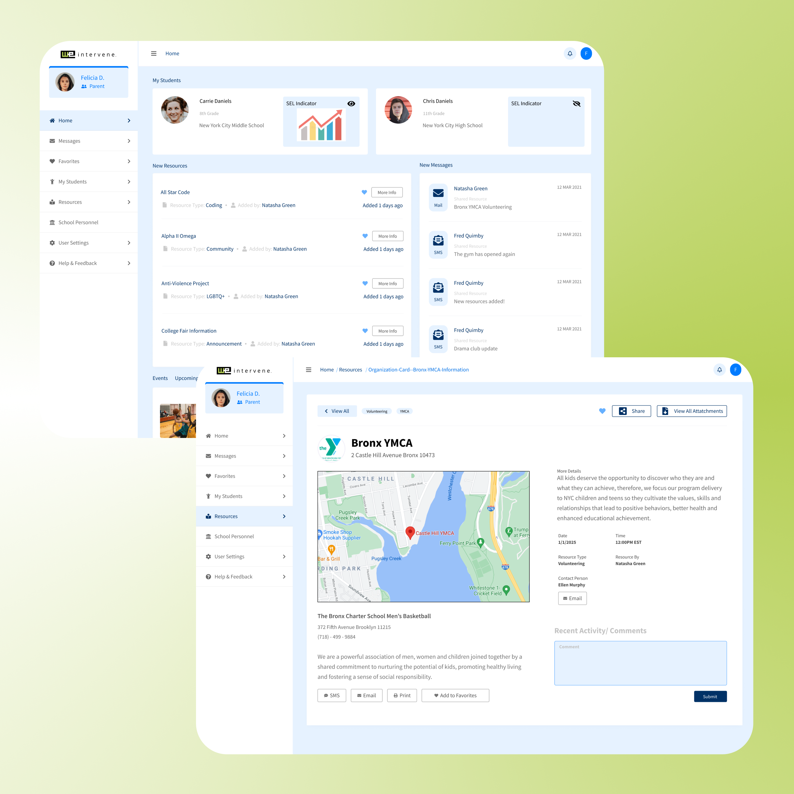

We Intervene

Product Type:
Responsive Web Application
Role:
UX Designer
Duration:
3 Weeks
Tools:
Concepts(iOS), FigJam, Figma, Trello, Jira, Google Drive, Google Forms, Calendly, Maze, UserTesting.com, Zoom
Responsive Web Application
UX Designer
3 Weeks
Concepts(iOS), FigJam, Figma, Trello, Jira, Google Drive, Google Forms, Calendly, Maze, UserTesting.com, Zoom
We Intervene is an education-technology startup that empowers student support staff to make data-driven decisions to enhance student success. These staff members often support large numbers of students and parents simultaneously.
In a 2-week design sprint, my team developed a parent portal to enhance the management of resources, referrals, and communication between support staff and parents. I created user flows, wireframes, and prototypes to improve the user experience, resulting in the successful delivery of a high-fidelity, interactive prototype.
Parents need a convenient and straightforward means of accessing resources and communications from their children's schools, as they are often bombarded with information and have other responsibilities, such as work and parenting commitments.
Simplified the user flows for how parents searched, accessed, and saved resources they were interested in.
Reduce the amount of unnecessary information and confusing terminology on the parent-side dashboard.
Our initial research revealed that users frequently found their experiences with student success platforms to be counterintuitive and not very helpful. To gain a deeper understanding of this, we conducted user interviews with parents from a school in Brooklyn, NY.
Ease of Access
Too Many Notifications
Wasted Time
Information Overload
Difficulty Communicating
With the user pain points in mind, we developed How Might We statements asking ourselves:
“How might we provide a way for users to access communications and resources from schools in an organized and prioritized, mobile-friendly format?”
In order to understand how users communicate with school support staff and access resources, a user flow was created to identify potential areas for improvement.
There were 2 main tasks that I wanted to make sure that users could accomplish without any errors.
Find, Save, and Sync Student Event to Calendar
Send & Receive Messages to & from Student Support Staff
Provides parents with general information about their student(s) at a quick glance.
Newly added resources for parents. Moved towards the top for easier visibility.
New messages from student support staff. Moved towards the top for easier visibility.
Once the basic layout was designed, a simple user onboarding was created to brief users on how to use the platform.
After presenting our research and design to our client, the look on her face said it all. She was very pleased with our prototype with the parent portal and said the she agrees with the importance of the chat translation feature. She also mentioned that the user onboarding would be very effective at reducing the learning curve involved for new users.
We Intervene is looking to launch this product later this year (2021), partnering with a local high school in Queens, New York.
During this 3 week sprint, my team and I faced many different challenges. For the most part it was inevitable simply due to the fact that the target user are working parents. They have busy lives and things come up, which ultimately is out of our control. Nonetheless, we faced these challenges head on and in the end, I am very proud of my team as we delivered a successful and well-polished final product.